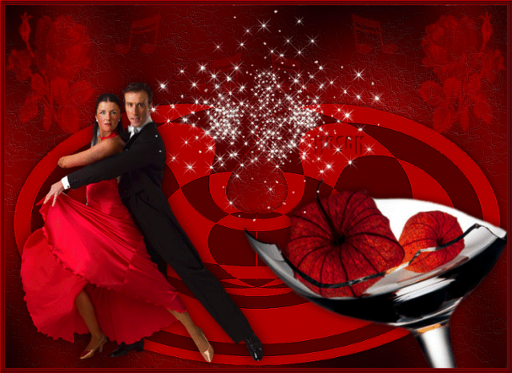
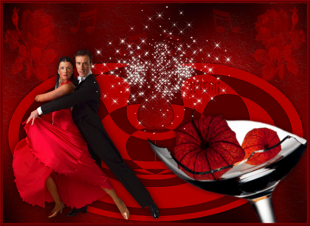
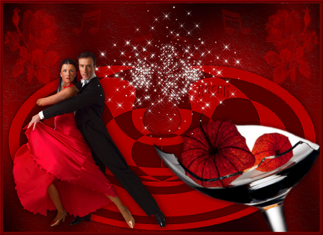

Made by
Seth Kranzler
THE ELEVENTH DAY
They did not rise till late that day, and dispensing with all the usual ceremonies, went directly to table once they had got up from their beds
Coffee, served by Giton, Hyacinthe, Augustine, and Fanny, was largely uneventful, although Durcet could not do without some farts from Augustine, and the Duc thrust his brave instrument between Fanny's lips
Now, as from the desire to what the desire causes 'tis ever but a single step with personages such as our heroes, they went unswervingly toward satisfying themselves; happily Augustine was prepared, she blew a steady breeze into the little financier's mouth, and he came nigh to stiffening; as for Curval and the Bishop, they confined themselves to fondling the two little boys' behinds, and then our champions moved to the auditorium
One day little Eugénie, who was becoming more familiar with the rest of us and whom six months in the whorehouse had only rendered all the prettier, Eugénie, I say, one day accosted me and lifting her skirts, bade me look at her ass
"Do you see, Duclos, how Fournier wants me to keep my behind today?"
An inch-thick patch of shit covered her sweet little asshole
"And why does she want you to wear that?" I asked her
"It's for the sake of an old gentleman who is coming this afternoon," she explained, "and he expects a beshitted ass
"
"Well, well," said I, "he'll be very pleased with you I'm sure, for yours couldn't possibly be more thickly encrusted
"
And she told me that Fournier's was the hand that had smeared her thus
Curious to witness the impending scene, I flew to the spy hole as soon as dear little Eugénie was summoned
The principal actor was a monk, but one of those monks we call gros bonnets , a Cistercian, tall, heavy, vigorous, and nearing sixty
He caresses the child, kisses her upon the mouth, and demanding to know whether she is neat and clean, he hoists her petticoats personally to verify a constant state of cleanliness whereof Eugénie gives him full assurance, although knowing nothing could be further from the truth; but she had been instructed so to speak to him
""
"What's this, my little rascal?" exclaims the monk upon catching sight of that formidable mess
"What? Do you dare tell me you are neat and tidy when your ass is as filthy as this? Why, by the
Virgin, I'm sure 'tis a fortnight since this bum's been wiped
"'Tis very troubling indeed, for I like things to be clean, I do, and it truly looks as if I had better look into the situation"
"
While speaking he had deposited Eugénie upon a bed, knelt behind her buttocks, and begun to pry them apart with both his hands
One would have thought that, at the outset, he purposed simply to observe the state of affairs, which caused him great surprise, but little by little he becomes accustomed to things as they are, sees here a virtue where he had seen only a fault before, sticks out his tongue and moves his head closer, sets to polishing the gem, the clods and spots he removes, the pristine object they conceal inflames his senses, his prick gets up, his nose, mouth, and tongue seem simultaneously to be at work, his ecstasy appears so delicious he is all but deprived of the power to speak, his fuck finally mounts—he grasps his prick, frigs it, and as he discharges, finishes cleaning that anus, which is now so fresh and pure one would scarcely suppose it had been nasty no more than a minute or two before
""
But the libertine was not yet ready to bring the affair to a conclusion, this voluptuous mania of his constituted a mere preliminary; he gets to his feet, bestows further kisses upon his little partner, exposes to her view a great ass of very evil aspect and very unclean, and he orders her to give it a thorough shaking, to socratize it; this brings his prick up furiously again, he now returns to Eugénie's ass, overwhelms it with renewed caresses, lickings, and so forth, but what he did after that it is not for me to relate, nor would it properly figure in these introductory narrations; you will, Messieurs, have the great kindness to allow Madame Martaine to tell you of the behavior of a villain with whom she was only too well acquainted; and in order to avoid all questions, my Lords, which your own regulations forbid me to treat, or resolve, I continue on to another episode
"Just one word, Duclos," said the Duc, who then queried the storyteller in an indirect language which enabled her to make lawful reply
"Was it big with the monk? Was this Eugénie's first time?…"
"Yes, Sire, the first, and the monk's was about the size of yours
"
"Ah, fuck my eyes!" muttered Durcet; "a damned pretty demonstration, I'd like to have seen that
"""
You would perhaps have been equally curious, Duclos said as she picked up the thread of her narrative, about the individual who, a few days later, passed into my hands
Outfitted with a vessel containing eight or ten great turds gathered from all quarters and whose authors he would have been very distressed to have identified, I was with my own hands to rub him from head to toe with this fragrant pomade
"Not an inch on his body was neglected, not even his face, and"
when I had massaged his prick, which I frigged at the same time, the infamous pig, who all the while stared contentedly at himself in a mirror, left evidence of his humble virility between my palms
""
And at last, gentlemen, we have arrived; I can now advise you that the homage is about to be made in the veritable temple
"I had been told to hold myself in readiness, I kept my bowels closed for two long days"
It was a commander of the Order of the Knights of Malta with whom I was to break a lance; he used to see a different girl every morning for these exercises; the following scene transpired at his home
"Very fair buttocks," was his opinion as he embraced my behind
"However, my child," he continued, "there's more to it than simply having a comely ass, you know
That comely ass must know how to shit
Tell me, have you the urge?"
"Such an urge I'm dying to satisfy it, Monsieur," I confessed
""Well, by Jesus, that's delicious!" exclaimed the commander, "that's what is called excellent service to society, but look here, my little duck, would you like to shit in this chamber pot I'm offering you?""
""In faith, Monsieur," I made answer, "what with the need I have to shit, I'd do it anywhere, I'd even shit in your mouth"
"
"No! In my mouth, you say? Why, bless me, that is delicious, and that's precisely the place I myself had in mind for you," he added, setting the pot aside
""
"Well, Monsieur, let's make haste, bring up your mouth," said I, "for indeed I'll not be able to hold back much longer
"
He places himself on the couch, I climb astride him, while operating I frig him, he supports my haunches with his hands and receives, piece by piece, everything I deposit in his avid mouth
He is thrilled by it all, nears his ecstasy, my wrist is hardly needed to bring forth the floods of semen which salute my performance; I frig, conclude my shitting, our man loses himself and his seed altogether, and I leave him delighted with me, or at least so he has the kindness to say to Fournier, at the same time requesting the services of another girl for the morrow
The personage who came next employed more or less the same approach to the problem, but
"simply kept the morsels in his mouth for a longer period"
He reduced them to a fluid, rinsed his mouth with them for a quarter of an hour, and spat out little more than dingy water
""
Yet another had, if that is possible, a still more bizarre eccentricity; he liked to find four turds in the pot beneath a pierced chair, but those four turds could not be mixed with so much as a single drop of urine
He would be shut up alone in the room containing this treasure, never did he allow a girl with him, and every precaution had to be taken to insure his solitude, he could not bear the thought he might be observed, and when at last he felt secure he went into action; but I am absolutely unable to tell you what he did, for no one had ever seen him; all that is known is that when he had left the room, the pot was discovered perfectly empty and as tidy as can be
But what he did with his four turds only the devil can tell you, if indeed he knows
He may perhaps have thrown them away somewhere, but, then again, he could also have done something else with them

However, what would lead one to suspect he did not do that something else with them is that he left the procuring of those four turds entirely up to Fournier, and never made the least inquiry about their origin
One day, in order to observe whether what we were about to say would alarm him—for his alarm might have provided us with a clue about the fate of those turds—we told him that the ones he had been served that day had come from several persons suffering from syphilis
He laughed good-naturedly with us, was not in the slightest disturbed, which reaction was not to be expected from someone who had employed rather than cast away the turds
When we sought, upon one or two occasions, to push our questions a little further, he bade us be silent, and never were we to learn more of the matter
""
That concludes what I have to tell you this evening, said Duclos; tomorrow I propose to relate my new mode of life, or rather the new turn my same mode of life took, when I met Monsieur d'Aucourt; and as for the charming passion you so heavily favor, I hope to have the honor to entertain you with examples of it for at least another two or three days
Opinions were divided about the fate of the turds in the episode Duclos had just recounted, and while arguing and reasoning about them, Messieurs had a few produced for themselves; and the Duc, eager to make everyone aware of the taste he was developing for Duclos, exhibited to the entire assembly his libertine manner to amuse himself with her, and the dexterity, aptitude, and promptness, accompanied by the most stirring language, wherewith she knew so artfully how to satisfy him
"Supper and the orgies transpired without any unusual incident, nothing of importance took place"
before the afternoon of the next day, and so we may move directly to the recitations wherewith Duclos brightened the 12th of November


 
